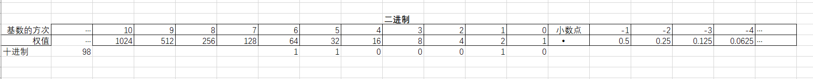

进制的转换
二进制
指二进制计数系统，基于2的幂，用数字”0 和 1”表示。
逢2进一
二进制数第一位上的1 相当于十进制第一位上的1
二进制数第二位上的1 相当于十进制第二位上的2
二进制数第三位上的1 相当于十进制第三位上的4
二进制数第四位上的1 相当于十进制第四位上的8
二进制数第五位上的1 相当于十进制第五位上的16
···
二进制数 1011 转换为十进制数如下：
1*2^2+ 0*2^2 + 1*2^1 + 1*2^0 = 11

八进制(octal)
指八进制计数系统，基于8的幂，用数字”0~7”表示。
逢8进一
八进制数第一位上的1 相当于十进制第一位上的1
八进制数第二位上的1 相当于十进制第二位上的8
八进制数第三位上的1 相当于十进制第三位上的64
八进制数第四位上的1 相当于十进制第四位上的512
···
八进制数 451 转换为十进制数如下：
4*8^2 + 5*8^1 +1*8^0 = 297
八进制转换二进制
每个八进制位会对应3个二进制位，如下表：
| 八进制 | 等价的二进制 | 八进制 | 等价的二进制 |
|---|---|---|---|
| 0 | 000 | 4 | 100 |
| 1 | 001 | 5 | 101 |
| 2 | 010 | 6 | 110 |
| 3 | 011 | 7 | 111 |
例如：八进制数 166 的二进制数为： 1 110 110
八进制 166 中的 1、6、6 分别对应二进制数 001、110、110
注意：在将八进制转化为二进制后，二进制中的 0 不能省略。
十六进制(hex)
指十六进制计数系统，基于16的幂，用数字”0 到 9”以及大写字母”A 到 F 或者 a 到 f”(A 到 F表示数字10 到 15)表示。
逢16进一
十六进制数 0xA9F6 转换为十进制数如下：
10*16^3 + 9*16^2 + 15*16^1 + 6*16^0 = 43510
十六进制转换成二进制
每个十六进制位都对应一个4个二进制位，两个十六进制数刚好对应8位字节，如下表：
| 十进制 | 十六进制 | 等价二进制 | 十进制 | 十六进制 | 等价二进制 |
|---|---|---|---|---|---|
| 0 | 0 | 0000 | 8 | 8 | 1000 |
| 1 | 1 | 0001 | 9 | 9 | 1001 |
| 2 | 2 | 0010 | 10 | A | 1010 |
| 3 | 3 | 0011 | 11 | B | 1011 |
| 4 | 4 | 0100 | 12 | C | 1100 |
| 5 | 5 | 0101 | 13 | D | 1101 |
| 6 | 6 | 0110 | 14 | E | 1110 |
| 7 | 7 | 0111 | 15 | F | 1111 |
十六进制数 0xA9 可转换成二进制数： 1010 1001，同理二进制数 0111 1111 可转换十六进制数： 0x7F
计算机是处理信息的机器
输入数据–>处理数据–>输出数据–>(长期存储数据)
在内存中存储数据的基本方法
变量：在内存中一块被命名的内存空间
1 | |